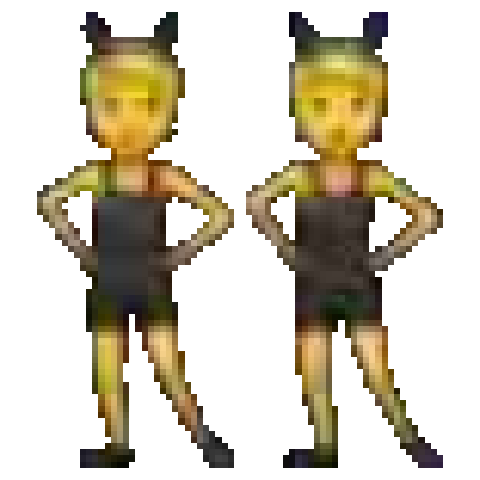
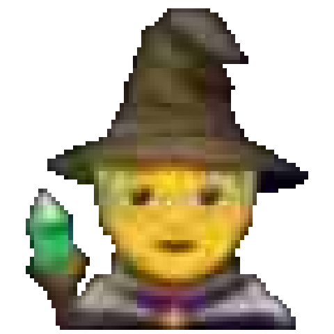
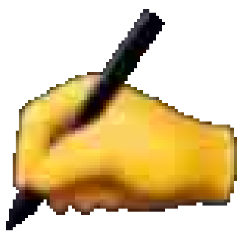
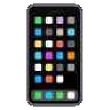
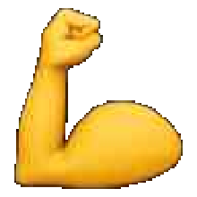

il bro più tossico (ma affettuoso) che vive dentro Cursor.
scrivi un prompt. lui lo intercetta. ti fa il roast, una frase alla volta. poi i numeri di quanto non hai lavorato.
«ciao potresti per favore sistemare questo bug che non va il login grazie mille»
no vabbè. non hai detto quale bug. hai solo fatto il gentile con un modello.
frasi brevi. ritmo veloce. max 1–2 emoji a sezione. mai noioso. mai corporate. mai spiegoni.

clonioriginalità zero
fun factcuriosità finta
prompt migliorepiù corto, più vero{ "roast_mode": true, "cloni", "fun_fact_frase", "soldi_gratis", "invece_potevi", "classifica", "prompt_migliore", "commento_prompt_migliore" }
persone hanno già scritto questa frase. o quasi.
originalità di un panino dell’Autogrill. similar_count lo tira il backend, random da 1 a 5.342.534. il modello non se lo inventa.
cambiando una parola era letteralmente la lettera d’amore di un personaggio secondario. fidati.
palesemente ironico. inventato. mai più di 5–6 parole di un’opera vera. è scritto così apposta.
79,64€ al mese. l’AI ti paga Netflix. tu la ringrazi pure.
60 prompt × 14 secondi × 15,50€/h. il conto lo fa il backend. il modello incolla i numeri e ci mette la cattiveria.

guardare 2 TikTok e dimenticarli entrambi
fare 7 squat. non li avresti fatti comunque1.322 persone stanno Ai-Ando più di te.
bhe coglione come sei. impegnati di più a non impegnarti. se sei primo: «sei il re dell’Ai-Ando, vai a toccare l’erba.» la classifica la tiene il backend, per token mandati.
ciao potresti per favore sistemare questo bug che non va il login grazie mille
Il login fallisce: [errore]. Atteso: [comportamento]. Trova la causa in `auth/` e proponi il fix minimo.
bhe coglione avresti potuto scriverla così. zero convenevoli. l’AI sa cosa cercare e dove. e sembri pure uno che sa programmare.
Ai-Ando vive nel prompt. se il prompt è pulito, lo dice. ti fa schifo lo stesso.